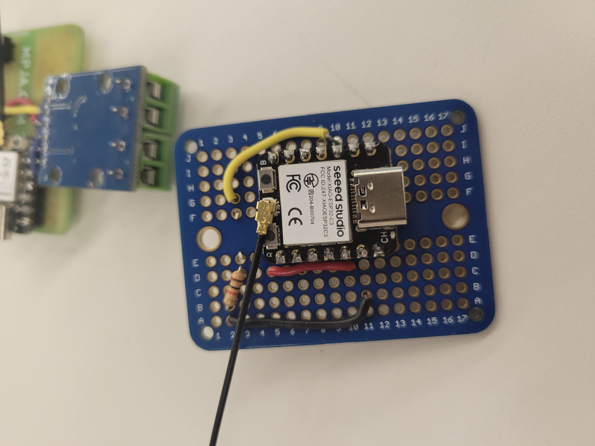
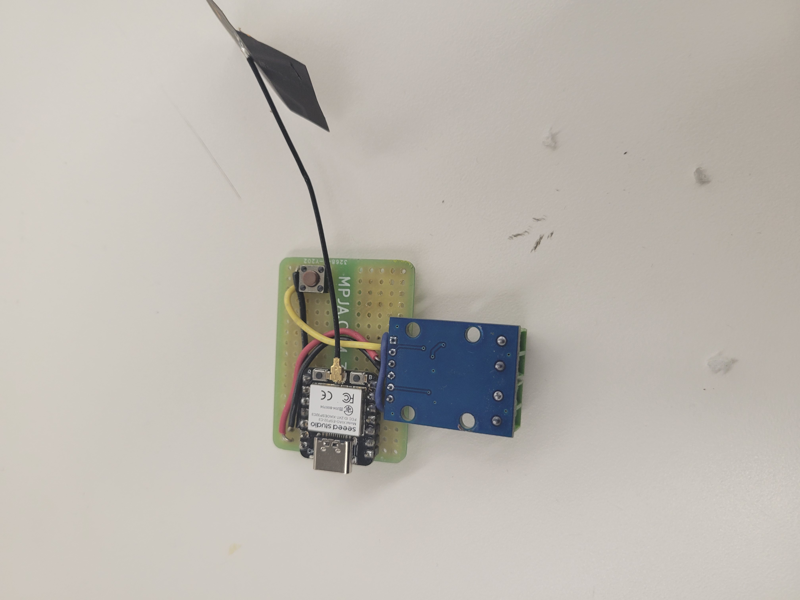
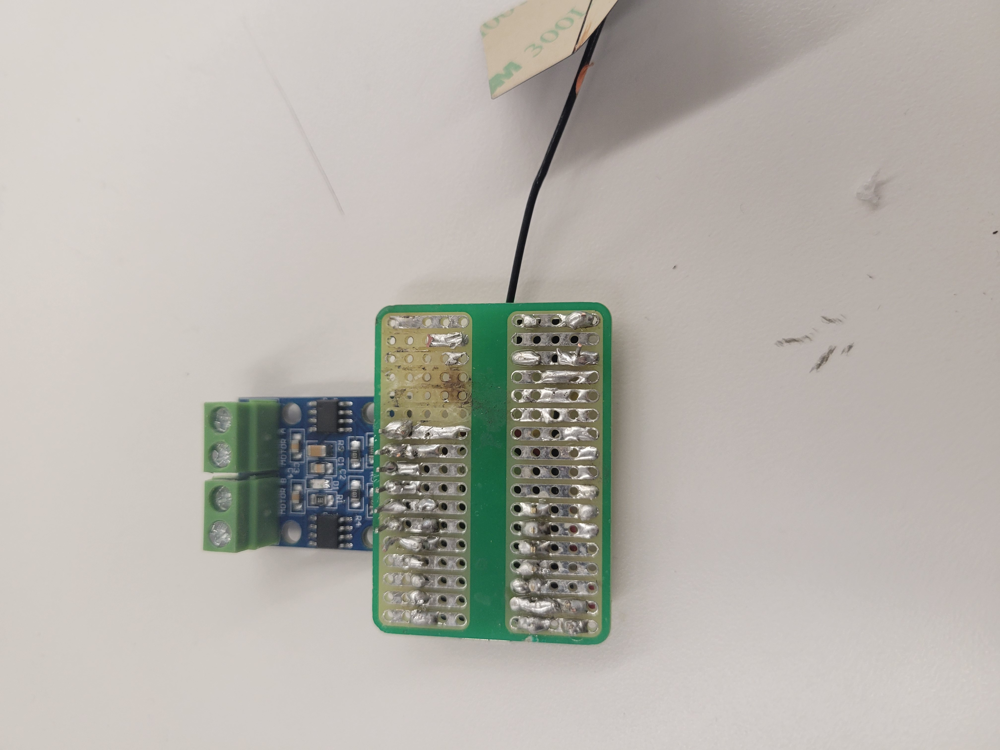
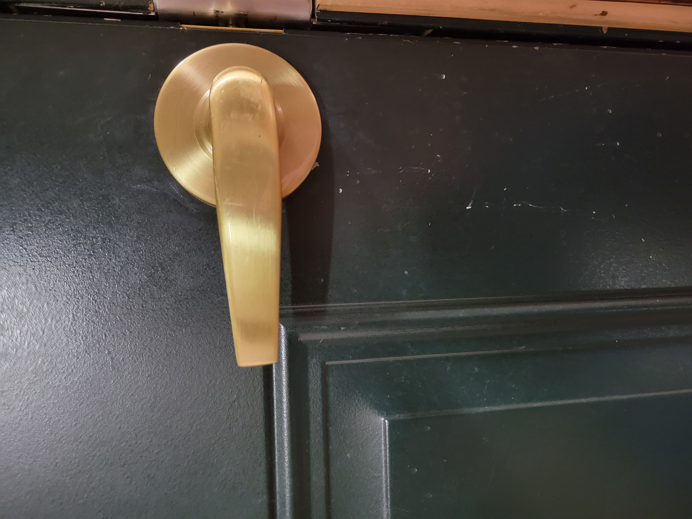
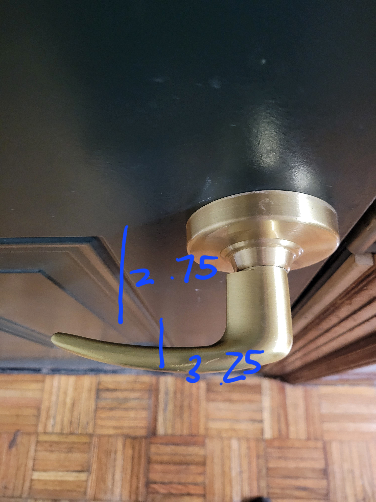
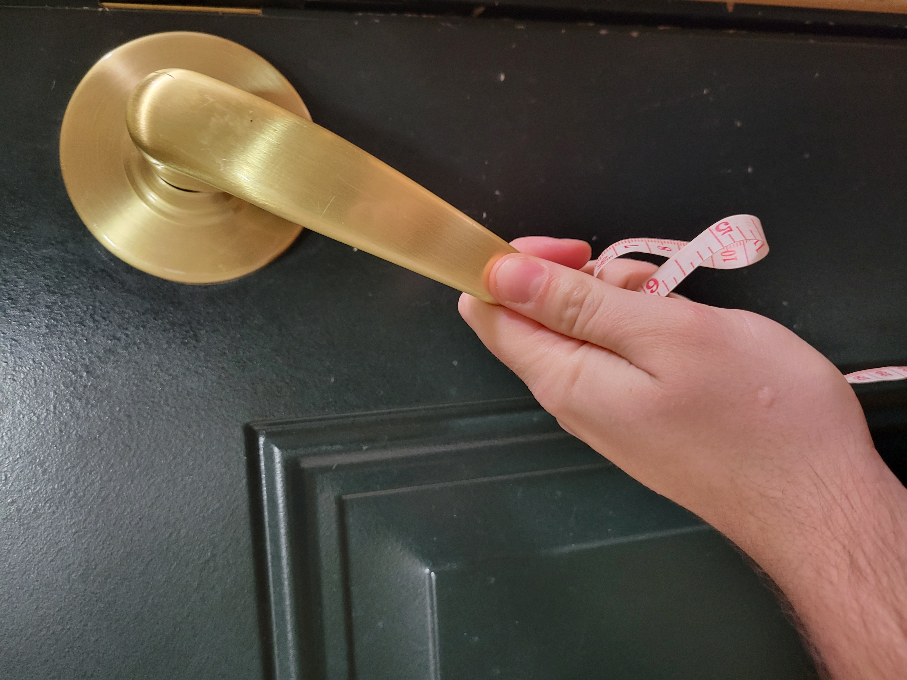
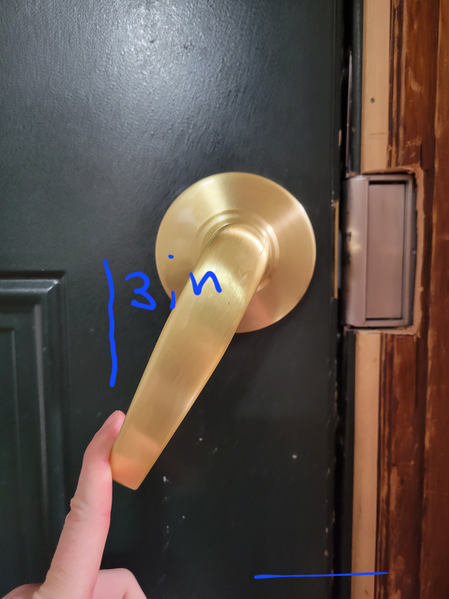
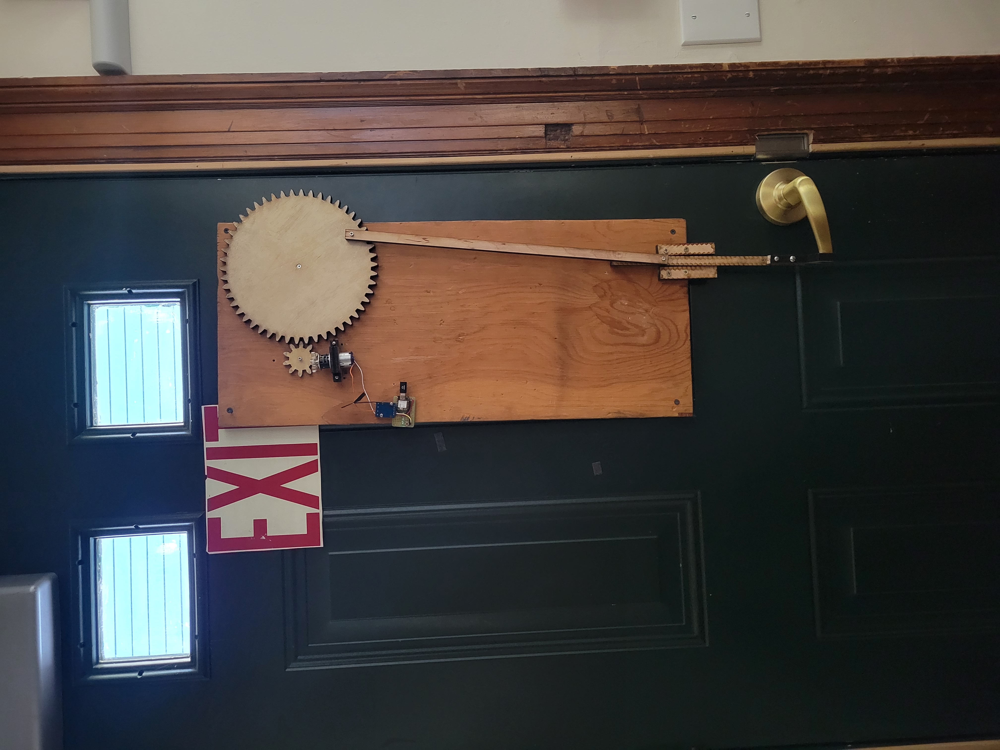
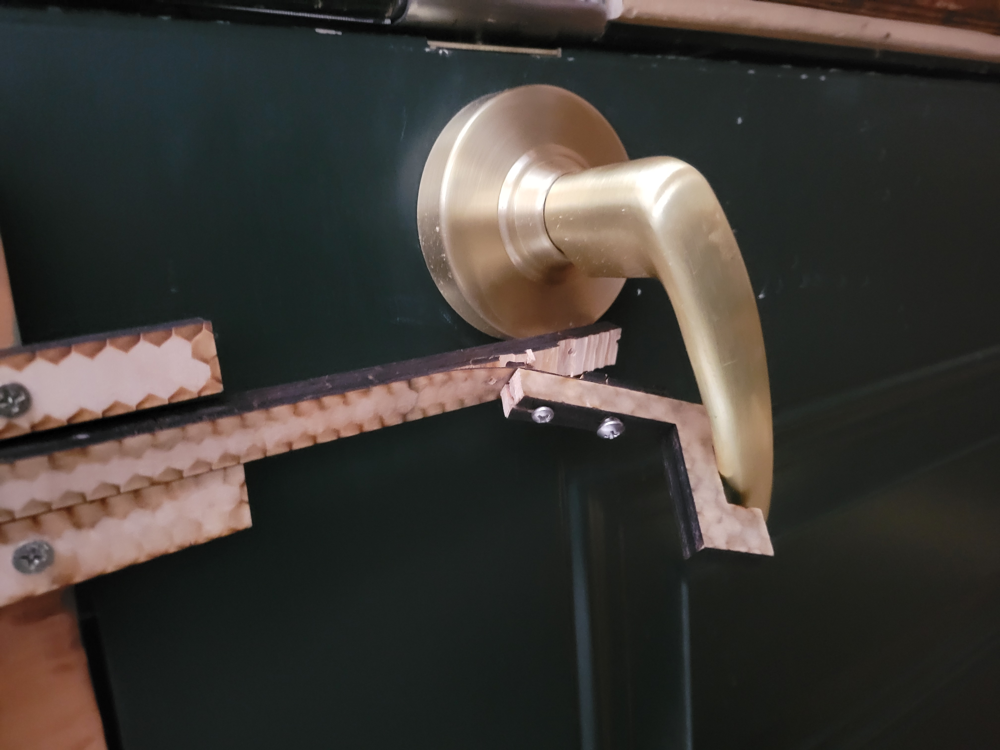
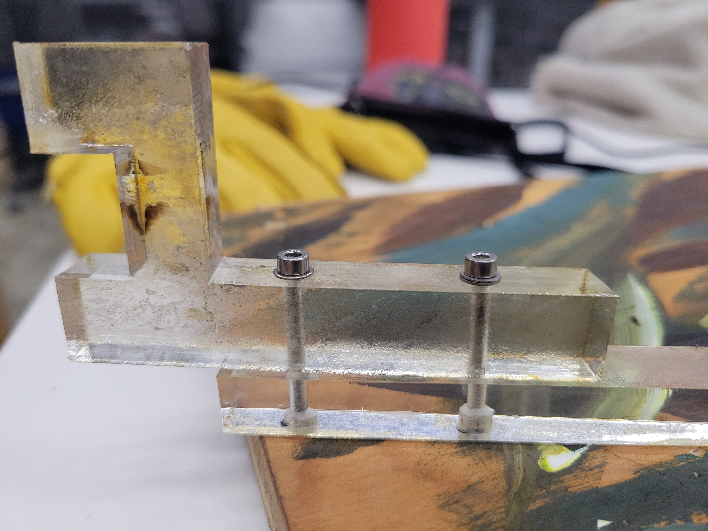

<br>
#### Final Project
For my minimum viable product I made the gear and piston system I plan to use to convert the circular motion of the motor into linear motion. I used the gearmaker extension in fusion 360 and lazercut the parts out of cardboard .
<img src="3.gif" alt="pison gear mechanism V1," style="width:500px;height:600px;">
<img src="5.gif" alt="pison gear mechanism V2," style="width:500px;height:600px;">
<img src="4.gif" alt="pison gear mechanism V3," style="width:500px;height:600px;">
I re-built the circuts Chris and I built during Week 9 Radio, WiFi, Bluetooth and then rebuilt them again in order to sodder them and make them a little more compact and sturdy.



<img src="6.gif" alt="soddered sender turning motor," style="width:500px;height:600px;">
I went to the site this system would be installed in and mesured the doornob.




I scalled up the MVP and on PK's sudgestions increased the distance between the gear and the piston in order to allow for a bigger gear/greater verticle motion. I gave it a backbored and while accounting for the distance to the backboard dsigned a fork to push down the doorknob... which broke imediatly.


I re-cut it out of acrylic and sunk the bolts so that they wouldn't catch on the edge of the back plate.

Of course by then I'd killed my second motor driver... the rotation of the gears tightened
the bolts holding them in place. Clarissa pointed out this possibility and I modifiedd the setup to
prevent this happening again and got the machine spinning again. I used an arduino uno because I
had worn out my patience for the Xiao's by this point.
<img src="14.mp4" alt="video of automatic door opener in infinite white space" style="width:500px;height:600px;">
<video width="500" height="600" controls>
<source src="14.mp4" type="video/mp4">
<source src="movie.ogg" type="video/ogg">
Your browser does not support the video tag.
I plan to do a V2 and V3 during J term next semester.
For this project, I want to get the remote working again (It was before, I think I crossed a wire
when soddering the receiver board).
I also want to make it quieter, it makes a really horrible sound. I think I can fix this by insulating
the motor or perhaps switching to a stepper motor. I also think lining up the gears better might help.
For V3 I want to try a different design in order to make it more easily replicatable/shippable
(spool on a motor and wire permanently affixed to the doorknob, motor spinning pulls the wire
onto the spool, tension pulls down doorknob).
</video>